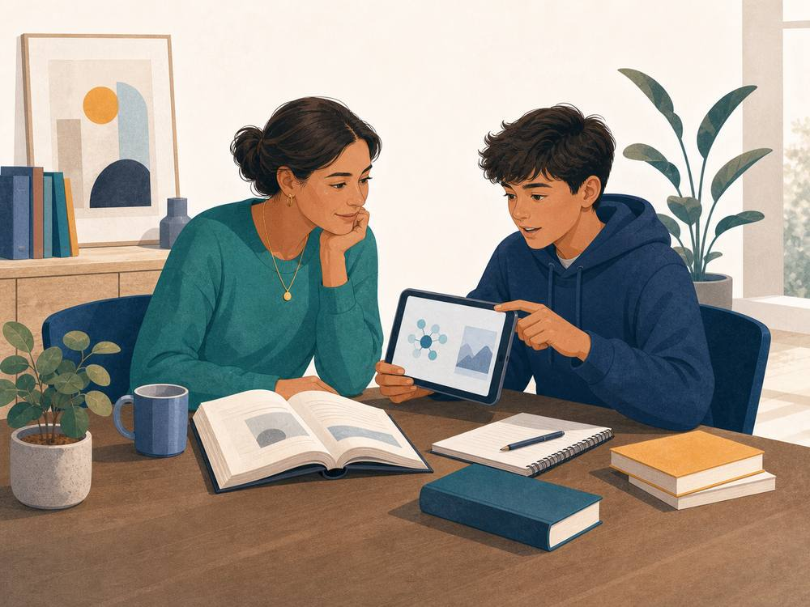

01
Learn one clear concept
Plain-language lessons introduce ideas such as machine learning, training data, generative AI, bias, and hallucinations.
AI literacy for ages 8–17
Vizancia turns essential AI concepts into short lessons, active games, and practical decisions. Children learn what AI can do, where it can go wrong, and how to keep their own judgment in charge.
Free to download · No account for core lessons · No in-app ads · Core lessons work offline

Each session is designed around one useful idea, one active decision, and one opportunity to explain the reasoning. It is a learning rhythm children can finish—not an endless feed.
Plain-language lessons introduce ideas such as machine learning, training data, generative AI, bias, and hallucinations.
Mini-games including Ethics Court, Speed Round, and Buzzword Buster turn the concept into a decision rather than a definition to memorize.
Feedback reinforces checking claims, protecting private information, and knowing when a human should make the call.
Good AI literacy is more than remembering vocabulary. Learners should be able to challenge an answer, identify a risk, and explain what they would do next.
The Vizancia core learning experience is designed without a Vizancia account, in-app advertising, or third-party behavioural analytics SDKs. Learning progress stays on the device. Multiplayer, platform services, and the limited-beta AI Sandbox are connected features with separate data flows. Optional measurement on this marketing website is separate and requires a visitor’s consent.
The current Google Play listing describes three learning modes. Families can begin with plain-language foundations and move toward more technical and ethical questions over time.
Begin with familiar examples, short explanations, and beginner-friendly decisions.
Connect AI concepts to schoolwork, media, fairness, privacy, and responsible use.
Explore the full learning map with adjustable difficulty and greater technical depth.
Use the AI Learning Hub to set family rules, understand the latest research, and turn a curious question into a structured learning activity.
A careful reading of current usage, schoolwork, trust, and companion research.
Read the evidence → Family safetyPrivacy, verification, boundaries, school rules, and what to do when an output feels wrong.
Open the guide → Printable activityPractise protecting information, checking a claim, and choosing when not to use AI.
Print the worksheet →Children should understand how AI works before they are asked to trust it. Vizancia combines clear explanations, active practice, and privacy-conscious product choices. Read the educational methodology.
The current app is free to download, has no in-app advertisements, and does not currently offer purchases. If that changes, pricing and terms would be disclosed before purchase and the website policies would be updated.
No account, name, or email is required to use the app. Learning progress is stored locally on the device.
No. The learning experience does not include open chat or a public social feed. Optional Apple Game Center features are operated by Apple under Apple’s own terms and privacy practices.
The Sandbox is an adult-managed limited beta and is not authorized for independent use by a child under 13. Prompts are processed online, so a parent, legal guardian, or educator must review the privacy notice, supervise minor use, and complete any required consent process.
No. Vizancia is a supplementary AI-literacy product. Families should still follow school policies and involve a teacher or qualified professional for important decisions.
We link to the current app-store listings and maintain an editorial policy and changelog. We do not publish invented reviews, ratings, or credentials.
Get the app, try the first session together, and ask your child to explain one thing the AI might get wrong.